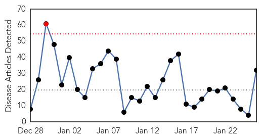
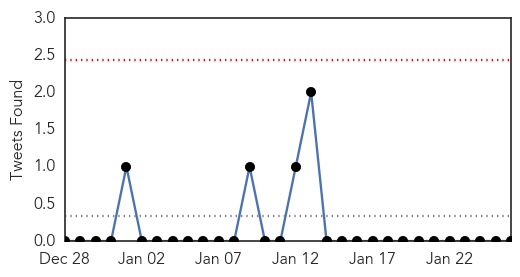
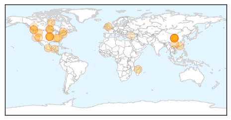

Influenza
30-Day Web Trend
1 alerts, 0 warnings

30-Day Twitter Trend
0 alerts, 0 warnings

Article Locations
Article Confidences
Top Articles:
- 0.997
- Public Health Notice Update: H7N9 avian flu -- OTTAWA, Jan. 26, 2015
- 0.997
- 5-year-old Las Vegas girl dies from flu despite receiving vaccination - Story
- 0.997
- Public Health Notice Update: H7N9 avian flu
- 0.997
- B.C. woman diagnosed with first H7N9 flu case in North America
- 0.995
- Idaho reports 13 flu deaths in past two weeks
- 0.995
- North America’s first human case of H7N9 avian flu confirmed in B.C.
- 0.993
- H7N9 bird flu diagnosed in B.C. traveller; first in North America
- 0.993
- Canada finds case of H7N9 bird flu in traveller; first in North America
- 0.993
- More on Canada's first H7N9 case
- 0.991
- How doctors and nurses avoid catching the flu and colds
- 0.989
- North America's first human case of H7N9 bird flu virus confirmed in B.C.
- 0.989
- North America's first human case of H7N9 bird flu virus confirmed in B.C.
- 0.980
- Mission Institutes Visitor Limitation Policy-Brevard NC
- 0.972
- Woman flying from Hong Kong to Vancouver becomes first human bird flu case in North America
- 0.969
- Government of Canada and British Columbia confirm case of H7N9 avian influenza in Canada
- 0.967
- WHO chief Margaret Chan warns of 'alarming' plague outbreak in Madagascar
- 0.966
- Government of Canada and British Columbia confirm case of H7N9 avian influenza in Canada -- OTTAWA, Jan. 26, 2015
- 0.965
- B.C. woman tests positive for H7N9 bird flu after trip to China
- 0.958
- B.C. woman tests positive for H7N9 bird flu after trip to China
- 0.953
- Nurse says flu policy makes unhealthy workplace
- 0.951
- Fayetteville, Breaking News, Newspaper, Lincoln County, Park City, Flintville, Petersburg, Redstone, Huntsville, Hazel Green, Goodman, Frito-Lay, Stonebridge, Elk River, Distillery, Motlow, Fair in Te
- 0.944
- H5N1 bird flu found in Washington; little human health risk since
- 0.943
- Avian flu found in Stanislaus County turkey flock
- 0.928
- Rockford hospitals lift visitor age restrictions
- 0.838
- BC woman diagnosed with first human case of H7N9 avian flu in North America
- 0.830
- H5N8 virus surfaces on California turkey farm
- 0.815
- Treatment options few for lung illness
- 0.795
- Centers for Disease Control’s (CDC) Own Data Shows Links Between Vaccines and Sudden Infant Death Syndrome (SIDS)
- 0.726
- Bird flu in BC first case in North America
- 0.714
- Avian flu detected at Central Valley farm
- 0.691
- Anatomy of the common cold: Doctors break down what's going on and what we should do
- 0.591
- Poultry Industry Warily Watches Bird Flu Outbreak
Top Tweets:
-
No tweets found for Jan 26, 2015
Unknown
30-Day Web Trend
0 alerts, 0 warnings

30-Day Twitter Trend
2 alerts, 0 warnings

Article Locations

Article Confidences
Top Articles:
- 0.983
- Bird flu confirmed in Canadian patient after China trip
- 0.978
- Deadly Japanese encephalitis surges in northeast India
- 0.976
- Bird flu confirmed in Canadian patient after China trip – BorneoPost Online
- 0.921
- UPDATE 2-Canada resident tests positive for H7N9 avian flu virus
- 0.917
- Chicago Tribune
- 0.917
- Chicago Tribune
- 0.917
- Chicago Tribune
- 0.917
- Chicago Tribune
- 0.917
- Chicago Tribune
- 0.917
- Chicago Tribune
- 0.917
- Chicago Tribune
- 0.917
- Chicago Tribune
- 0.917
- Chicago Tribune
- 0.917
- Chicago Tribune
- 0.917
- Chicago Tribune
- 0.917
- Chicago Tribune
- 0.917
- Chicago Tribune
- 0.917
- Chicago Tribune
- 0.917
- Chicago Tribune
- 0.917
- Chicago Tribune
- 0.917
- Chicago Tribune
- 0.917
- Chicago Tribune
- 0.917
- Chicago Tribune
- 0.917
- Chicago Tribune
- 0.917
- Chicago Tribune
- 0.917
- Chicago Tribune
- 0.917
- Chicago Tribune
- 0.917
- Chicago Tribune
- 0.917
- Chicago Tribune
- 0.917
- Chicago Tribune
- 0.917
- Chicago Tribune
- 0.917
- Chicago Tribune
- 0.917
- Chicago Tribune
- 0.917
- Chicago Tribune
- 0.917
- Chicago Tribune
- 0.917
- Chicago Tribune
- 0.908
- Canada resident tests positive for H7N9 avian flu virus
- 0.893
- H7N9 bird flu confirmed in B.C. resident who travelled to China
- 0.866
- Argentina to draft bill dissolving domestic spy agency -President
- 0.866
- Mariupol attack shows Russia wants to seize more of Ukraine -U.S.
- 0.857
- Health experts say Norovirus activity increasing in Cuyahoga Cou - Cleveland 19 News
- 0.791
- No avian flu spread in first Agnew tests as federal inspectors go door to door -- Port Angeles Port Townsend Sequim Forks Jefferson County Clallam County Olympic Peninsula Daily news
- 0.777
- Canadian has first H7N9 case in North America
- 0.767
- H7N9 bird flu confirmed in B.C. patient
- 0.722
- UN agencies ramp up aid efforts to flood-hit Southern Africa countries
- 0.714
- B.C. resident diagnosed with H7N9 bird flu
- 0.702
- 18th Sitting of the Health and Family Committee (Narodna Skupstina Republike Srbije)
- 0.650
- Weekly Overview: New Warning of PED Spread and Why There's Less Pork at Chipotle
- 0.642
- British Columbian diagnosed with first human case of avian flu in North America
- 0.639
- Study finds rabies booster defends pets with out-of-date vaccination against the disease
Showing top 50 articles...
Top Tweets:
-
No tweets found for Jan 26, 2015